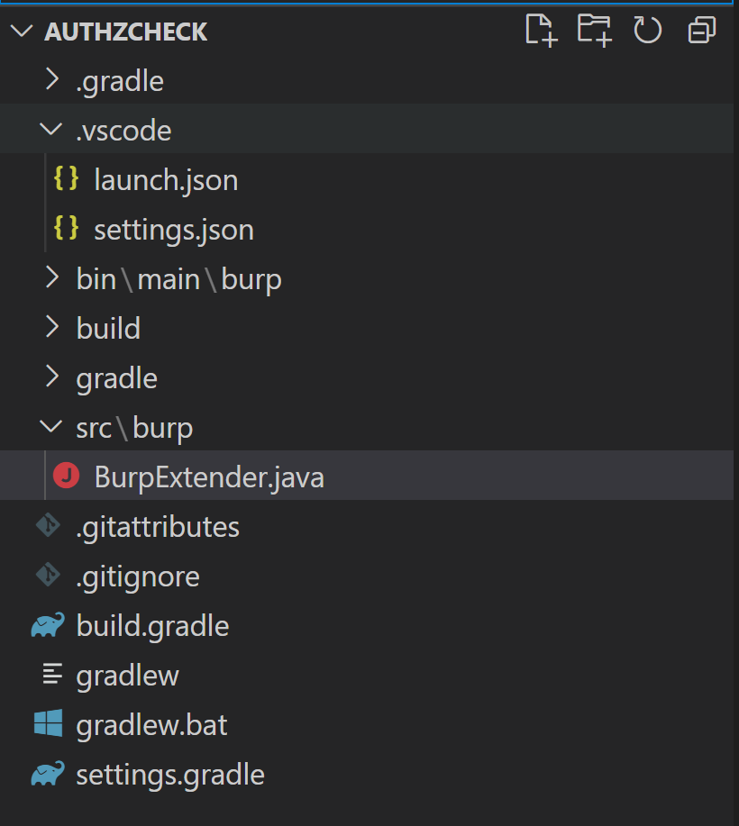

Burp extensions gives you power to automate unique dynamic security testing scenarios. In this article, we will see the dev setup needed to start developing burp extension in Java using VS Code as IDE.
-
Install Java Dev Kit
I have installed jdk-16.0.1_windows-x64_bin from https://www.oracle.com/java/technologies/javase-jdk16-downloads.html
-
Install Gradle
- I have installed v7.0.2 from https://gradle.org/releases/
- Add "PATH" variable after installation "C:\Program Files\gradle-7.0.2\bin"
- Try command "gradle -version"
-
Setting Up Gradle
- Create a directory for extension development
- Run the following command in the root of the directory, "gradle init --type basic"
- Press ENTER twice to select default.
- Give name of the Extension, it can be changed later by editing "settings.gradle"
- Open "build.gradle" file and paste following commands,
-
Gradle Wrapper
The Gradle Wrapper is a way to get reliable builds regardless of the local Gradle version.
- Run gradle wrapper in the extension directory.
- To build the project with the Wrapper, replace gradle in your commands with gradlew (Linux) or gradlew.bat (Windows). Eg. gradlew.bat build
- Install VS Code and Java Extensions
-
Creating a project structure in VS Code
- Create the src\burp directory 
- In src\burp create a file named BurpExtender.java
-
Setting up VS Code Tasks
- Press F1 to open the VS Code command palette.
- Type task and select Configure Default Build Task
- Select Create tasks.json file from template
- Select Others. VS Code will create the .vscode\tasks.json file
- Open .vscode\tasks.json and paste the following in it
- To build, Press F1 to open the command palette, typing tasks then selecting Run Build Task. The output jar will be in "build\libs\"